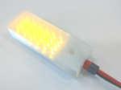

Lamp© 2018, ProtoIt Platform: RASPBERRY |  |
Beschrijving:
Een lamp (of led) wordt aan of uit geschakeld. Je stelt in hoe hard of zacht de lamp brandt.
Ook kun je hem laten knipperen. Stel de tijd in dat hij aan en uit blijft.
LET OP! Je mag een lamp niet rechtstreeks op de Raspberry-pinnen aansluiten. Dan gaat de Raspberry stuk.
Onderdelen:
Lamp
| Pin | GPIO-pin waarop je de lamp aansluit. |
| Helderheid (%) | Een waarde van 0 tot 100, die de lichtsterke van de lamp bepaalt. Standaard ingesteld op 100%. |
| Helderheid uit (%) | Een waarde van 0 tot 100, die de lichtsterke in uit-stand bepaalt. Standaard ingesteld op 0%. |
| Tijd aan (msec) | De tijd in milliseconden dat de lamp aan blijft. Standaard op 0 ingesteld (= altijd aan). |
| Tijd uit (msec) | De tijd in milliseconden dat de lamp uit blijft. Standaard op 0 ingestald (= altijd aan). |
| Start wanneer? | Als het ingevulde signaal optreedt, zal de lamp beginnen. Standaard op het signaal Direct ingesteld. |
| Stop wanneer? | Als het ingevulde signaal optreedt, zal de lamp stoppen. Standaard op het signaal Nooit ingesteld. |